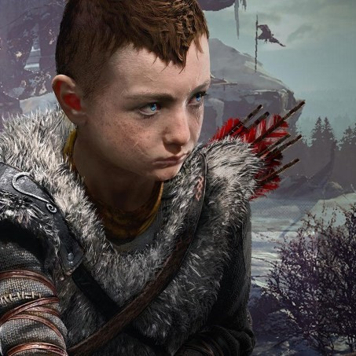

Atreus a játék második legfontosabb karaktere és Kratos fiaként egy másik kulcsszereplője a történetnek. Mivel ő még csak egy gyermek így vele együtt éli át a játékos a történteket és együtt csodálkozik rá a világra, ami neki is csak annyira új mint a játékosnak. Miután apja jelenti neki a családot édesanyja halála után, így együtt indulnak neki ennek az útnak és annak minden veszélyének. Az út során Atreusból egy erősebb kiforrottabb személyiség válik, ki belátja apja hibáit és próbál egy erősebb és bölcsebb harcossá válni. Ahogy már említettem, Atreus rácsodálkozik a világra amiből eddig keveset látott de mégis többet tud mint apja, emellett tud rúnákat ovasni apjával ellentétben, így ő a kettőjük közül aki jobban ismeri a 9 világot, azonban mégis őt nyűgözi le jobban.
